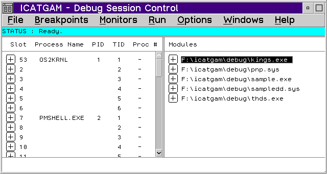

The Debug Session Control window is the control window of the debugger and displays during the entire debugging session. This window is divided into two panes. One pane shows the threads for the program you are debugging and the corresponding process IDs, process names, kernel thread IDs, and processor number (when applicable). The other pane shows the components for the program that you are debugging.
The Threads pane contains the threads and the state of the threads started by your program. These values can be used in conjunction with the KDB .p command to match an ICAT thread to a corresponding KDB slot.
To display the state of a thread, select the plus icon to the left of the thread.
The Thread Popup Menu contains choices to take you to different debugger windows. The popup menu is shown when you place the mouse pointer on a highlighted thread name and click mouse button 2.
The following are the popup choices:
Execution point
The Components pane shows the path name of the executable files that are associated with the OS2KRNL.
To display a list of object files contained within an executable file, select the plus icon to the left of the executable file name. To open a source window of an object file, double-click on the object file name.
To display a list of functions for a specific object file, select the plus icon to the left of the object file name. To open a source window of a specific function, double-click on the function name.
You can display any object or function in a source window by double-clicking on the name in the Components pane or by highlighting the component name and selecting the View popup choice.
To specify which components are shown in the Components list, select Options -> Window Settings -> Display style. The Display Style window displays. Disable the Show all components choice if you want only components compiled and linked with debugging data to be listed. If the choice is enabled, all components are listed.
The Object or Function Popup Menu contains choices that allow you to display the object or function in a source window or set a function breakpoint. The popup menu is shown when you place the mouse pointer on a object or function name and click mouse button 2.
The choices in the popup menu are:
View